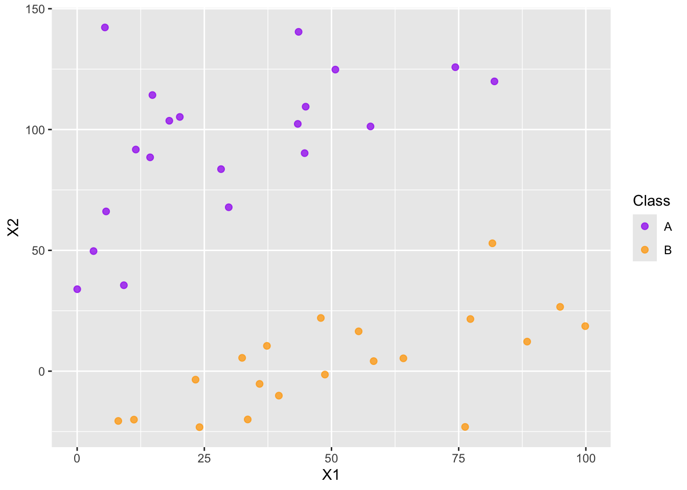
Introduction to Support Vector Classifiers
Purpose: In this notebook we’ll introduce the notion of Support Vector Classifiers (Support Vector Machines). In particular we’ll see
- Support vector machines and classifiers are distance-based models.
- Support vector machines and classifiers are not impacted by observations far away from the decision boundary.
- Support vectors are those observations near the decision boundary which influence its position and shape.
The Big Idea
In this document we discuss support vector classifiers and support vector machines. we’ll use some simulated data throughout this introduction.
Hyperplane: A hyperplane in \(p\) dimensions is simply an object that can be described in the form \(\beta_0+\beta_1x_1 + \beta_2x_2 + \dots + \beta_px_p = 0\). You are very familiar with the hyperplane in two dimensions: \(\beta_0+\beta_1x_1+\beta_2x_2 = 0\) (or \(Ax+By=C\)).
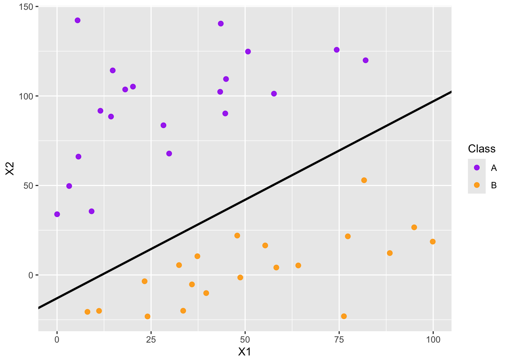
Separating Hyperplane: In the classification setting, a separating hyperplane is a hyperplane that separates the two classes without any observations violating the border.
- In general, if one separating hyperplane exists, there are infinitely many choices of separating hyperplane.
- How do we choose which one we should use?
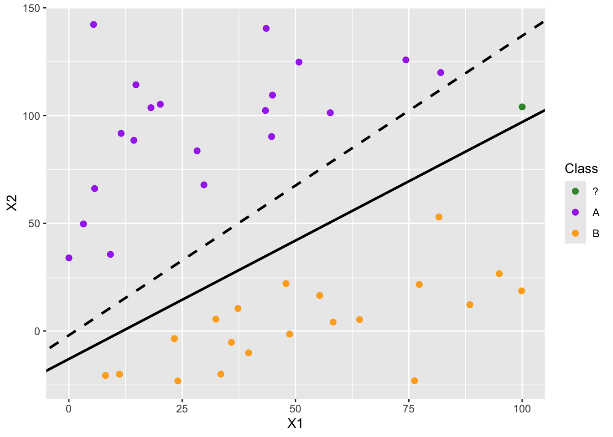
Maximal Margin Classifier
We can use a margin around the separating hyperplane, making the margin as wide as possible before encountering any observations. These observations sitting on the edge of the margin are called support vectors, and they are the only observations involved in fitting the classifier. That is, any other observation can move and it will not impact the position of the decision boundary unless the observation moves into the margin. You can see a maximal margin classifier below.
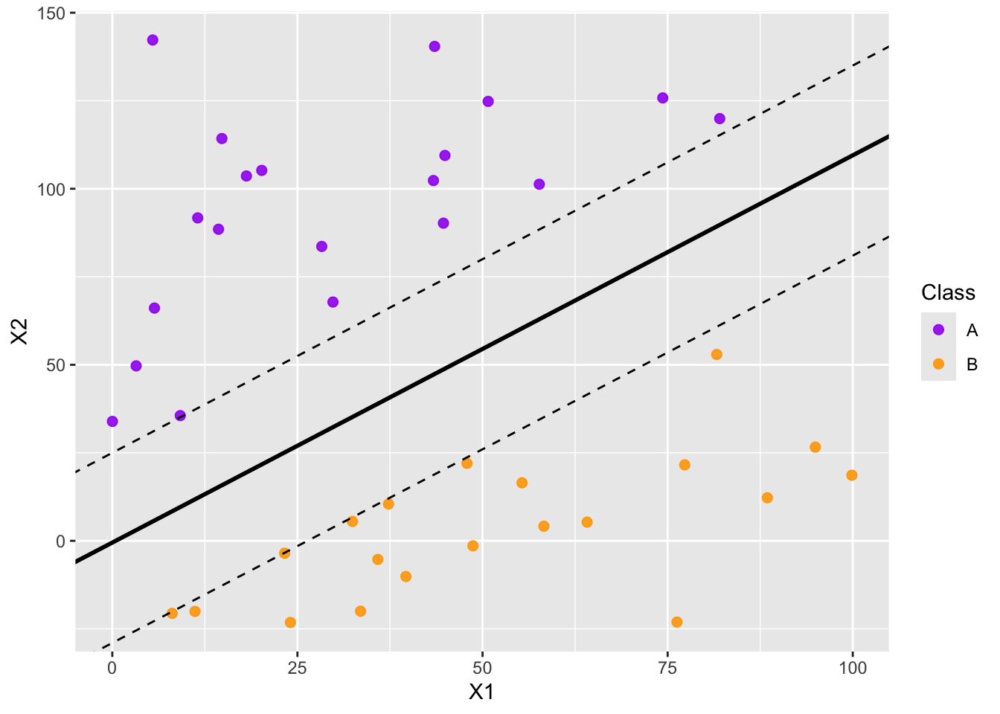
Constrained Optimization Problem (MMC): The constrained optimization problem for the maximal margin classifier is as follows:
- \(\displaystyle{\max_{\beta_0,~\beta_1,~\dots,~\beta_p}M}\)
- \(\displaystyle{\sum_{j=1}^{p}{\beta_j^2} = 1}\)
- \(\displaystyle{y_i\left(\beta_0+\beta_1x_{i1}+\beta_2x_{i2}+\dots +\beta_px_{ip}\right)\geq M,~\forall i\in\left[n\right]}\)
Note: Because the maximal margin classifier is distance-based, this model class is not well-suited for categorical predictors and we must scale our numerical predictors prior to using it.
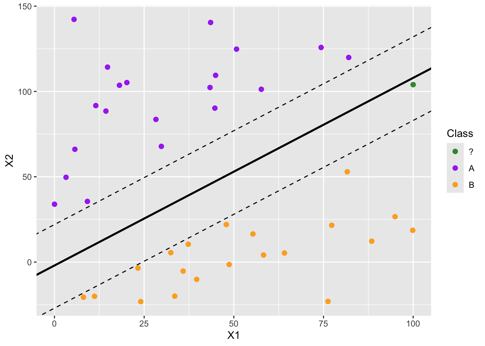
Soft Margins
A potential problem with the maximal margin classifier is that very few observations are used to fit the classifier. Only the very closest observations are used to determine the classifier and margin. This makes the classifier extremely sensitive to those datapoints closest to the decision boundary. We can reduce the classifier’s dependence on these very few individual observations by allowing some budget for observations to violate the margin. Doing this increases the number of support vectors.
The non-separable case
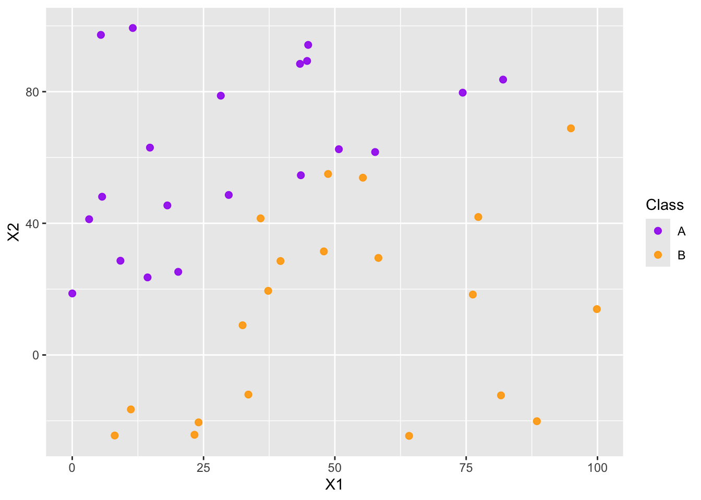
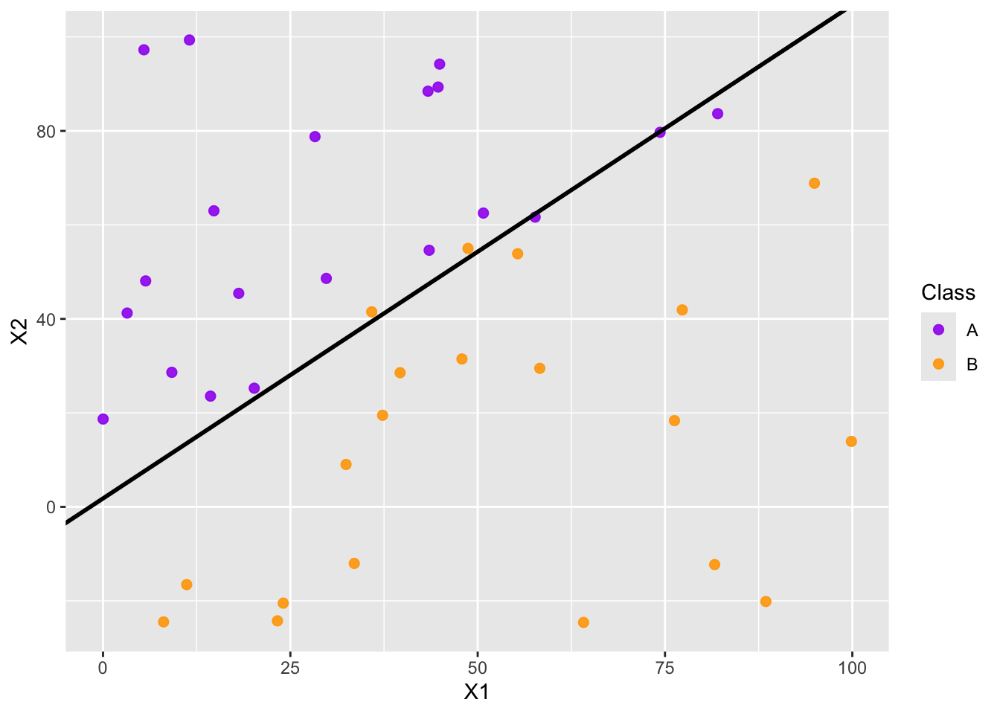
Constrained Optimization Problem (SVC): The constrained optimization problem for the support vector classifier is as follows:
- \(\displaystyle{\max_{\beta_0,~\beta_1,~\dots,~\beta_p,~\varepsilon_1,~\varepsilon2,~\dots,~\varepsilon_n}M}\)
- \(\displaystyle{\sum_{j=1}^{p}{\beta_j^2} = 1}\)
- \(\displaystyle{y_i\left(\beta_0+\beta_1x_{i1}+\beta_2x_{i2}+\dots +\beta_px_{ip}\right)\geq M\left(1-\varepsilon_i\right),~\forall i\in\left[n\right]}\)
- \(\varepsilon_i \geq 0,~\forall i\in [n]\)
- \(\displaystyle{\sum_{i=1}^{n}{\varepsilon_i}\leq C}\)
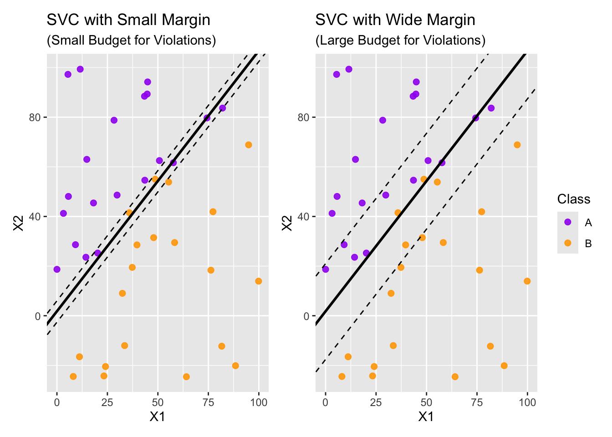
Support Vectors and Observations with Influence
Now that we have some idea how support vector classifiers work, we can use {tidymodels} to fit and use these types of models just like we would any other class of model. We’ll fit several support vector classifiers on slightly different toy data sets. The data sets will differ by a single observation being moved around.
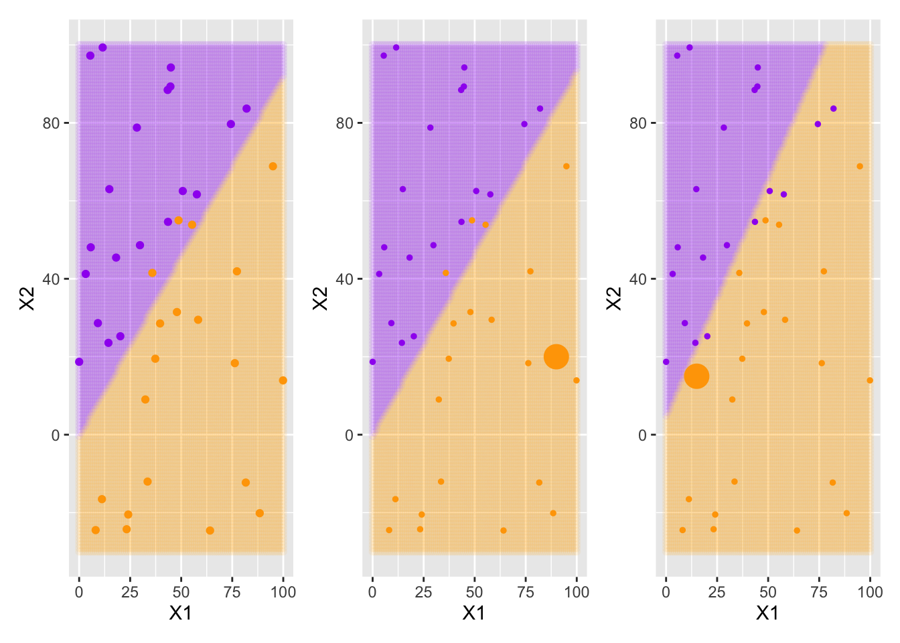
The large orange data point in the middle and rightmost plots above was added to the training data for the support vector classifier. Visually, we can see that the addition of the large orange observation in the middle plot had no impact on the decision boundary. This is because that data point is outside the margin for the support vector classifier. In the rightmost plot we see that the large orange observation has influenced the decision boundary because it was placed in violation of the margin. That is, the large orange observation in the right-most plot is a support vector.
How to Implement in {tidymodels}
A support vector classifier is a model class (that is, a model specification). We define our intention to build a support vector classifier using
svm_linear_spec <- svm_linear() %>%
set_engine("LiblineaR") %>%
set_mode("classification")In addition to svm_linear(), there are svm_poly() and svm_rbf() which offer more flexible models.
Support vector machines can be used for both regression and classification. For this reason, the line to set_mode() is required when declaring the model specification. The line to set_engine() above is unnecessary since LiblineaR is the default engine. There are other available engines though.
Hyperparameters and Other Extras
Depending on the type of support vector machine (linear, polynomial, or radial basis function) chosen, support vector machines have tunable hyperparameters. They are
cost, which is a positive number associated with the cost of predicting an observation in violation of the margin (either within the margin or on the wrong side of the classifier altogether).degreeis a positive number identifying the polynomial degree (for polynomial support vector machines). This is flexible and allows for non-integer degrees.scale_factoris a positive number denoting the scaling factor for the polynomial (for polynomial support vector machines).rbf_sigmais a positive number for a radial basis function (for radial basis function support vector machines).
You can see the full {parsnip} documentation for svm_linear() here, for svm_poly() here, and for svm_rbf() here.
Summary
In this notebook we introduced the basics of support vector classifiers. The classifiers we looked at produced linear boundaries, but there are other versions of support vector classifiers which produce non-linear boundaries. Linear algebra is doing some heavy lifting behind the scenes here. Since that course is not a prerequisite for this one, we’ll just mention that there exist linear support vector machines, polynomial support vector machines, and radial basis support vector machines. They are each implemented in {tidymodels} with the model specifications svm_linear(), svm_poly(), and svm_radial() respectively. An example of how these different variations of support vector machines appears below on a different dataset.
Appendix: SVMs With Alternative Kernels
Consider the following data set for which a linear support vector machine may perform poorly.
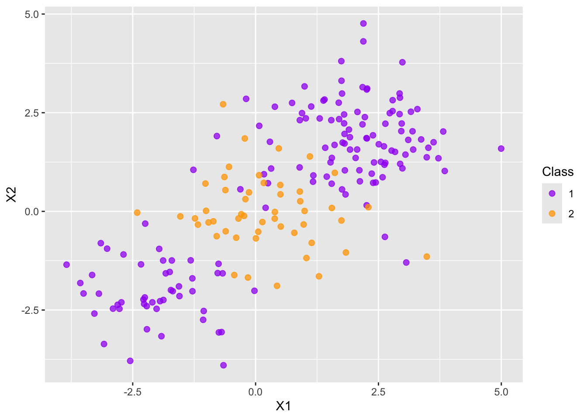
We’ll fit support vector classifiers with a linear kernel, a polynomial kernel, and a radial kernel and show the decision boundaries below. For the polynomial support vector classifier, I’ll use step_poly() to allow for second degree polynomial features to be used.
Setting default kernel parameters 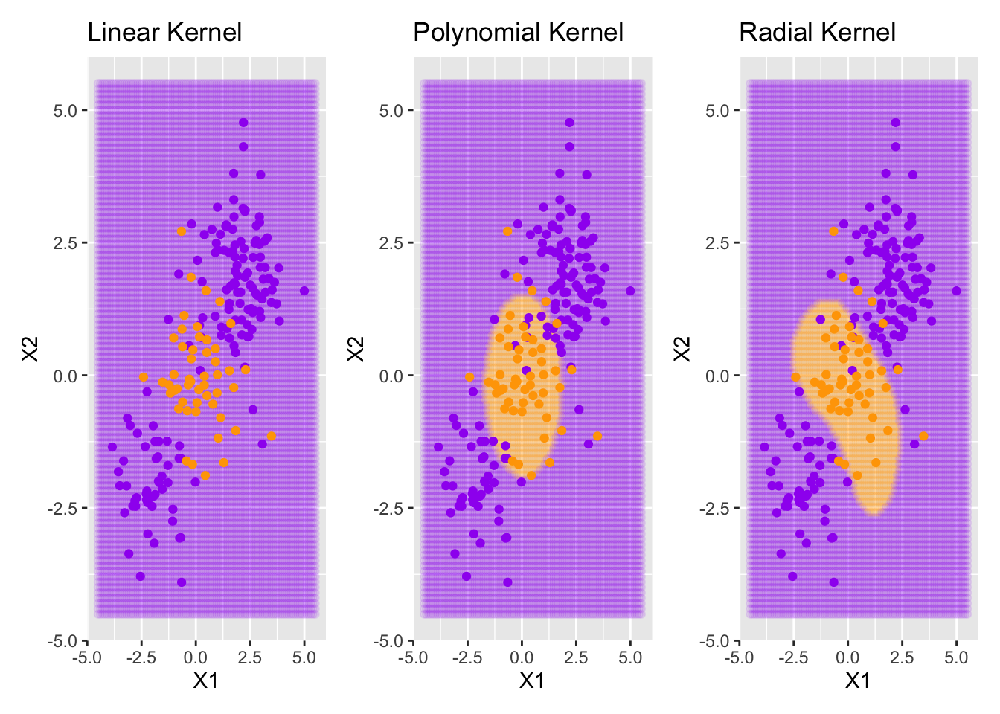
Notice that the linear support vector classifier doesn’t attempt to draw any boundaries. The best it is able to do is just classify all observations as belonging to the purple class since it is the dominant one (most of the training observations are purple). The support vector classifiers using the polynomial or radial basis function kernels are able to fit more complex boundaries.